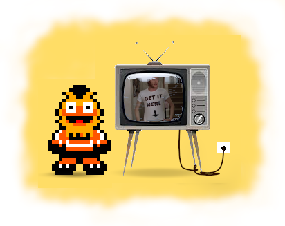
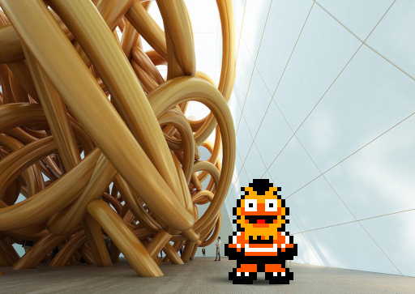

5 Reference

The following reference materials for the Knotty module use the standard Racket notation with enclosing parentheses. Knotty accepts other syntax styles as well: for more information, see the sweet-exp documentation.
5.1 Structs
struct
(struct Stitchtype ( rs-symbol ws-symbol rs-rev-symbol ws-rev-symbol width cable rs-string ws-string alt-symbol alt-rev-symbol stitches-in stitches-out offset repeatable? variable-repeat? hand-compatible? machine-compatible? name) #:prefab) rs-symbol : symbol? ws-symbol : symbol? rs-rev-symbol : symbol? ws-rev-symbol : symbol? width : natural? cable : boolean? rs-string : bytes? ws-string : bytes? alt-symbol : (or/c byte? #f) alt-rev-symbol : (or/c byte? #f) stitches-in : natural? stitches-out : natural? offset : exact-integer? repeatable? : boolean? variable-repeat? : boolean? hand-compatible? : boolean? machine-compatible? : boolean? name : string?
struct
(struct Yarn (color name weight fiber brand) #:transparent) color : (and/c fixnum? nonnegative?) name : string? weight : (or/c byte? #f) fiber : string? brand : string?
Color is coded as a 24-bit RGB number. Yarn weight can be a number between 0 and 7, corresponding to the CYC categories, or #f if unspecified.
A warning will be issued if the yarn weight appears incompatible with the pattern Gauge.
struct
(struct Pattern ( name url attribution keywords rowspecs rowmap rowcounts nrows options repeats max-colors yarns) #:transparent) name : string? url : string? attribution : (listof (prefab/c 'Author string? string?)) keywords : (listof string?) rowspecs : (vectorof Rowspec?) rowmap : Rowmap? rowcounts : (vectorof Rowcount?) nrows : (and/c exact-integer? positive?) options : Options? repeats : Repeats? max-colors : natural? yarns : (vectorof (or/c Yarn? #f))
struct
(struct Rows (rownums rowspec) #:transparent) rownums : (listof (and/c exact-integer? positive?)) rowspec : Rowspec?
struct
(struct Rowspec (stitches memo default-yarn yarns-used turn) #:transparent) stitches : Tree? memo : string? default-yarn : byte? yarns-used : natural? turn : (or/c 'no-turn 'turn 'w&t)
struct
(struct Rowmap (numbers index) #:transparent) numbers : (vectorof (vectorof (and/c exact-integer? positive?))) index : (vectorof natural?)
struct
(struct Rowcount ( offset stitches-in-before-fix stitches-in-before-mult stitches-in-after-fix stitches-in-after-mult stitches-in-total stitches-out-total stitches-in-fix stitches-out-fix stitches-in-var stitches-out-var multiple-fix multiple-var var-count) #:transparent) offset : exact-integer? stitches-in-before-fix : (or/c natural? #f) stitches-in-before-mult : (or/c natural? #f) stitches-in-after-fix : (or/c natural? #f) stitches-in-after-mult : (or/c natural? #f) stitches-in-total : (or/c natural? #f) stitches-out-total : (or/c natural? #f) stitches-in-fix : (or/c natural? #f) stitches-out-fix : (or/c natural? #f) stitches-in-var : (or/c natural? #f) stitches-out-var : (or/c natural? #f) multiple-fix : (or/c natural? #f) multiple-var : (or/c natural? #f) var-count : natural?
struct
(struct Options (technique form face side gauge) #:transparent) technique : (or/c 'hand 'machine) form : (or/c 'flat 'circular) face : (or/c 'rs 'ws) side : (or/c 'right 'left) gauge : (or/c Gauge? #f)
struct
(struct Gauge ( stitch-count stitch-measurement row-count row-measurement measurement-unit) #:prefab) stitch-count : (and/c exact-integer? positive?) stitch-measurement : (and/c exact-integer? positive?) row-count : (and/c exact-integer? positive?) row-measurement : (and/c exact-integer? positive?) measurement-unit : (or/c 'inch 'cm)
struct
(struct Repeats ( caston-multiple caston-addition first-repeat-row last-repeat-row) #:transparent) caston-multiple : (or/c natural? #f) caston-addition : (or/c natural? #f) first-repeat-row : (or/c (and/c exact-integer? positive?) #f) last-repeat-row : (or/c (and/c exact-integer? positive?) #f)
struct
(struct Chart (rows width height h-repeats v-repeats name yarns) #:transparent) rows : (vectorof Chart-row?) width : natural? height : natural? h-repeats : (and/c exact-integer? positive?) v-repeats : (and/c exact-integer? positive?) name : string? yarns : (vectorof (or/c Yarn? #f))
struct
(struct Chart-row (stitches default-yarn rs? r2l? short?) #:transparent) stitches : (vectorof (prefab/c 'Stitch symbol? (or/c byte? #f))) default-yarn : byte? rs? : boolean? r2l? : boolean? short? : boolean?
5.2 Types
type
(Leaf (Pairof count stitch))
count : natural?
stitch : (prefab/c 'Stitch symbol? (or/c byte? #f))
type
(Attribution (Vectorof author))
author : (prefab/c 'Author string? string?)
type
(Measurement-Unit sym)
sym : (or/c 'inch 'cm)
type
(Rownums-input (Listof rownum))
rownum : (or/c (and/c exact-integer? positive?) Rownums-input?)
5.3 Predicates
procedure
(Technique? v) → boolean?
v : any/c
procedure
(Measurement-Unit? v) → boolean?
v : any/c
5.4 Functions
procedure
(pattern [ #:name name #:url url #:attribution attribution #:keywords keywords #:technique technique #:form form #:face face #:side side #:gauge gauge #:repeat-rows repeat-rows rows-yarns]) → Pattern? name : string? = "" url : string? = ""
attribution : (listof (prefab/c 'Author string? string?)) = null keywords : (listof string?) = null technique : (or/c 'hand 'machine) = 'hand form : (or/c 'flat 'circular) = 'flat face : (or/c 'rs 'ws) = 'rs side : (or/c 'right 'left) = 'right gauge : (or/c Gauge? #f) = #f
repeat-rows :
(or/c (and/c exact-integer? positive?) (list/c (and/c exact-integer? positive?) (and/c exact-integer? positive?)) #f) = #f
rows-yarns : (or/c (listof (or/c Yarn? Rows?)) Yarn? Rows?) = ...
The technique option sets whether the piece is worked by 'hand or 'machine knit.
Use form to set whether the piece is worked 'flat or in the round ('circular).
The face keyword determines whether the first row is knit on the right side ('rs) or wrong side ('ws) of the piece.
Similarly, side governs whether the first row is knit from 'right to left, or from 'left to right.
The default options are 'hand, 'flat, 'rs and 'right.
Certain combinations of options are disallowed. In hand knitting, a piece that starts on the RS must be worked right to left. Conversely a piece worked on the WS must be knit left to right.
procedure
((rows [ #:memo memo #:yarn default-yarn] rownums ...) xs ...) → Row? memo : string? = "" default-yarn : (or/c symbol? #f) = #f rownums : (or/c (and/c exact-integer? positive?) Rownums-input?) xs : (or/c Leaf? Node? Treelike?)
It returns a constructor for Rows to which stitch elements are supplied as a sequence of arguments.
The memo keyword records memo information for the row or rows.
The total number of stitches produced by the row(s) can be set using the stitches keyword.
The default yarn 'mc can be changed by setting the yarn keyword to 'cc_, where _ is the number of the contrast color yarn.
procedure
end : (and/c exact-integer? positive?) (sequence start end) → list? start : (and/c exact-integer? positive?) end : (and/c exact-integer? positive?) (sequence start end step) → list? start : (and/c exact-integer? positive?) end : (and/c exact-integer? positive?) step : (and/c exact-integer? positive?)
(sequence end) gives a sequence of consecutive integers from 1 to end, inclusive.
(sequence start end) gives a sequence from start to end, inclusive.
(sequence start end step) gives a sequence from start to end with a step size of step.
procedure
end : (and/c exact-integer? positive?) (seq start end) → list? start : (and/c exact-integer? positive?) end : (and/c exact-integer? positive?) (seq start end step) → list? start : (and/c exact-integer? positive?) end : (and/c exact-integer? positive?) step : (and/c exact-integer? positive?)
procedure
color : (and/c fixnum? nonnegative?) name : string? = "" weight : (or/c byte? #f) = #f fiber : string? = "" brand : string? = ""
Dark grey colors, like #x333333, are preferred to black (#x000000) as they tend to look better on-screen.
procedure
(update-stitch-instructions stitch-id instructions) → Void stitch-id : symbol? instructions : string?
procedure
(import-xml filename) → Pattern?
filename : path-string?
procedure
filename : path-string?
procedure
(export-xml p filename) → bytes?
p : Pattern? filename : path-string?
procedure
p : Pattern? filename : path-string?
procedure
filename : path-string?
procedure
p : Pattern? filename : path-string?
Knitspeak is a single-color pattern format, so all yarn information will be lost.
procedure
(import-png filename [ #:name name #:url url #:attribution attribution #:keywords keywords #:technique technique #:form form #:face face #:side side #:gauge gauge #:repeat-rows repeat-rows]) → Pattern? filename : path-string? name : string? = filename url : string? = ""
attribution : (listof (prefab/c 'Author string? string?)) = null keywords : (listof string?) = null technique : (or/c 'hand 'machine) = 'hand form : (or/c 'flat 'circular) = 'flat face : (or/c 'rs 'ws) = 'rs side : (or/c 'right 'left) = 'right gauge : (or/c Gauge? #f) = #f
repeat-rows :
(or/c (and/c exact-integer? positive?) (list/c (and/c exact-integer? positive?) (and/c exact-integer? positive?)) #f) = #f
The default settings result in a flat, hand knitted pattern. An error message will be raised if the pattern is not compatible with the options supplied.
The default name for the pattern is the filename. Yarns are assigned names that approximate their color.
procedure
(pattern-rs<->ws p) → Pattern?
p : Pattern?
procedure
p : Pattern?
procedure
(pattern-set-technique p technique) → Pattern?
p : Pattern? technique : (or/c 'hand 'machine)
procedure
(pattern-set-name p name) → Pattern?
p : Pattern? name : string?
procedure
(pattern-set-attribution p attribution) → Pattern?
p : Pattern? attribution : (listof (prefab/c 'Author string? string?))
procedure
(pattern-set-keywords p keywords) → Pattern?
p : Pattern? keywords : (listof string?)
procedure
(pattern-set-gauge p gauge) → Pattern?
p : Pattern? gauge : Gauge?
procedure
(pattern-set-yarns p yarns) → Pattern?
p : Pattern? yarns : (vectorof Yarn?)
5.5 Stitches
The tables below present the stitches that are currently implemented in Knotty.
5.5.1 Single-width Stitches
In the following table, the column contents have the following meanings:
Symbol. The symbol used to display the stitch on a knitting chart. These symbols are represented using the Stitchmastery Dash font. The descriptions of these symbols, however, do not necessarily correspond exactly to their definitions in the StitchMastery software.
Stitch (RS). The stitch that the symbol represents when it is knit on the right side of the workpiece. Hover over the text to see knitting instructions.
Stitch (WS). The stitch that the symbol represents when it is knit on the wrong side of the workpiece. Hover over the text to see knitting instructions.
Macro. How the stitch is represented in Knotty code. Parentheses are not required for these macros, which expand to the appropriate Stitch definition.
H (Hand). A checkmark indicates that the stitch is used in hand knitting.
M (Machine). Whether the stitch is used in machine knitting.
The pattern stitches (stockinette, reverse stockinette, and garter) so not have symbols of their own but employ knit and purl stitches as required. In a similar way, the turn and w&t macros substitute turnl / turnr and w&tl / w&tr as necessary.
Symbol |
| Stitch (RS) |
| Stitch (WS) |
| Macro |
| H |
| M |
¼ |
| Cast on |
| Cast on |
| co* |
| ✓ |
| ✓ |
T |
| Bind off |
| Bind off |
| bo* |
| ✓ |
| ✓ |
k |
| Knit |
| Purl |
| k* |
| ✓ |
| ✓ |
p |
| Purl |
| Knit |
| p* |
| ✓ |
| ✓ |
n |
| Knit tbl |
| Purl tbl |
| ktbl* |
| ✓ |
| - |
? |
| Purl tbl |
| Knit tbl |
| ptbl* |
| ✓ |
| - |
! |
| Knit below |
| Purl below |
| kb_ |
| ✓ |
| - |
% |
| Purl below |
| Knit below |
| pb_ |
| ✓ |
| - |
& |
| Slip purlwise wyib |
| Slip purlwise wyif |
| slwyib_ |
| ✓ |
| ✓ |
' |
| Slip purlwise wyif |
| Slip purlwise wyib |
| slwyif_ |
| ✓ |
| - |
* |
| Slip knitwise wyib |
| Slip knitwise wyif |
| slkwyib_ |
| ✓ |
| - |
Q |
| Slip knitwise wyif |
| Slip knitwise wyib |
| slkwyif_ |
| ✓ |
| - |
U |
| Knit 2 together |
| Slip slip purl |
| k2tog |
| ✓ |
| ✓ |
W |
| Purl 2 together |
| Slip slip knit |
| p2tog |
| ✓ |
| ✓ |
V |
| Slip slip knit |
| Purl 2 together |
| ssk |
| ✓ |
| ✓ |
X |
| Slip slip purl |
| Knit 2 together |
| ssp |
| ✓ |
| ✓ |
j |
| Centered double dec |
| Centered double dec purl |
| cdd |
| ✓ |
| † |
( |
| Centered double dec purl |
| Centered double dec |
| cddp |
| ✓ |
| † |
s |
| Knit 3 together |
| Slip slip slip purl |
| k3tog |
| ✓ |
| † |
u |
| Purl 3 together |
| Slip slip slip knit |
| p3tog |
| ✓ |
| † |
t |
| Slip slip slip knit |
| Purl 3 together |
| sssk / sk2psso |
| ✓ |
| † |
v |
| Slip slip slip purl |
| Knit 3 together |
| sssp |
| ✓ |
| † |
Uµ |
| Knit 2 together tbl |
| Slip slip purl 2 tog |
| k2togtbl |
| ✓ |
| † |
Wµ |
| Purl 2 together tbl |
| Slip slip knit 2 tog |
| p2togtbl |
| ✓ |
| † |
V¶ |
| Slip slip knit 2 tog |
| Purl 2 together tbl |
| ssk2tog |
| ✓ |
| † |
X¶ |
| Slip slip purl 2 tog |
| Knit 2 together tbl |
| ssp2tog |
| ✓ |
| † |
sµ |
| Knit 3 together tbl |
| Slip slip slip purl 2 tog |
| k3togtbl |
| ✓ |
| † |
uµ |
| Purl 3 together tbl |
| Slip slip slip knit 2 tog |
| p3togtbl |
| ✓ |
| † |
t¶ |
| Slip slip slip knit 3 tog |
| Purl 3 together tbl |
| sssk3tog |
| ✓ |
| † |
v¶ |
| Slip slip slip purl 3 tog |
| Knit 3 together tbl |
| sssp3tog |
| ✓ |
| † |
04 |
| Knit 4 together |
| Purl 4 together |
| dec4k |
| ✓ |
| - |
[4 |
| Purl 4 together |
| Knit 4 together |
| dec4p |
| ✓ |
| - |
05 |
| Knit 5 together |
| Purl 5 together |
| dec5k |
| ✓ |
| - |
[5 |
| Purl 5 together |
| Knit 5 together |
| dec5p |
| ✓ |
| - |
o |
| Yarn over |
| Yarn over |
| yo |
| ✓ |
| † |
oB |
| Double yarn over |
| Double yarn over |
| yo2w |
| ✓ |
| - |
oC |
| Triple yarn over |
| Triple yarn over |
| yo3w |
| ✓ |
| - |
oD |
| Quadruple yarn over |
| Quadruple yarn over |
| yo4w |
| ✓ |
| - |
: |
| Make left |
| Make right purlwise |
| ml |
| ✓ |
| - |
; |
| Make right |
| Make left purlwise |
| mr |
| ✓ |
| - |
x |
| Make left purlwise |
| Make right |
| mlp |
| ✓ |
| - |
y |
| Make right purlwise |
| Make left |
| mrp |
| ✓ |
| - |
> |
| Make |
| Make purl |
| m |
| ✓ |
| ✓ |
@ |
| Make purl |
| Make |
| mp |
| ✓ |
| ✓ |
i |
| Centered double inc |
| Centered double inc purl |
| cdi |
| ✓ |
| † |
) |
| Centered double inc purl |
| Centered double inc |
| cdip |
| ✓ |
| † |
L |
| Knit-yo-knit |
| Purl-yo-purl |
| kyk |
| ✓ |
| - |
} |
| Purl-yo-purl |
| Knit-yo-knit |
| pyp |
| ✓ |
| - |
*c |
| 1-to-4 increase |
| 1-to-4 increase purl |
| inc4k |
| ✓ |
| - |
&c |
| 1-to-4 increase purl |
| 1-to-4 increase |
| inc4p |
| ✓ |
| - |
*d |
| 1-to-5 increase |
| 1-to-5 increase purl |
| inc5k |
| ✓ |
| - |
&d |
| 1-to-5 increase purl |
| 1-to-5 increase |
| inc5p |
| ✓ |
| - |
] |
| Knit wrapping needle twice |
| Purl wrapping needle twice |
| k2w |
| ✓ |
| - |
Ú |
| Purl wrapping needle twice |
| Knit wrapping needle twice |
| p2w |
| ✓ |
| - |
Ü |
| Knit wrapping needle 3 times |
| Purl wrapping needle 3 times |
| k3w |
| ✓ |
| - |
Û |
| Purl wrapping needle 3 times |
| Knit wrapping needle 3 times |
| p3w |
| ✓ |
| - |
ø |
| Place bead and knit |
| Place bead and purl |
| pbk |
| ✓ |
| - |
ù |
| Place bead and purl |
| Place bead and knit |
| pbp |
| ✓ |
| - |
$ |
| Make bobble |
| Make bobble (WS) |
| mb / mb-ws |
| ✓ |
| - |
¿ |
| Special stitch |
| Special stitch |
| sp |
| ✓ |
| ✓ |
, |
| Drop stitch |
| Drop stitch |
| drop-st |
| ✓ |
| - |
w |
| No stitch |
| No stitch |
| ns |
| ✓ |
| ✓ |
º |
| Thread lace |
| Thread lace |
| tl_ |
| - |
| ✓ |
ï |
| Tuck |
| Tuck |
| tuck |
| - |
| ✓ |
\ |
| Left transfer |
| Right transfer |
| lt |
| - |
| † |
/ |
| Right transfer |
| Left transfer |
| rt |
| - |
| † |
. |
| Empty needle |
| Empty needle |
| en |
| - |
| ✓ |
O |
| Turn left |
| Turn right |
| turnl |
| ✓ |
| - |
P |
| Turn right |
| Turn left |
| turnr |
| ✓ |
| - |
O| |
| Wrap and turn left |
| Wrap and turn right |
| w&tl |
| ✓ |
| - |
P| |
| Wrap and turn right |
| Wrap and turn left |
| w&tr |
| ✓ |
| - |
| Stockinette |
| Stockinette |
| ss* |
| ✓ |
| ✓ | |
| Reverse stockinette |
| Reverse stockinette |
| rss* |
| ✓ |
| ✓ | |
| Garter |
| Garter |
| gs* |
| ✓ |
| ✓ | |
| Turn |
| Turn |
| turn |
| ✓ |
| - | |
| Wrap and turn |
| Wrap and turn |
| w&t |
| ✓ |
| - |
* Variable number repeat: if the number of stitches is not specified, stitches will be inserted to fill the row. |
_ Repeatable stitch: the number of stitches must be specified. |
† Machine stitch requires manual intervention. |
5.5.2 Combination Stitches
For hand knitting only. Symbols are provided for knitting the stitches on both the RS and the WS. Instructions are provided only for knitting them on the RS. Links are provided to some helpful blog posts.
Symbol |
| Stitch (RS) |
| Stitch (WS) |
| Macro |
®¯ |
|
| Bunny ears decrease (WS) |
| bed | |
®¯ |
| Bunny ears decrease (WS) |
| Bunny ears decrease |
| bed-ws |
¯® |
|
| Bunny ears back decrease (WS) |
| bebd | |
¯® |
| Bunny ears back decrease (WS) |
| Bunny ears back decrease |
| bebd-ws |
®o¯ |
|
| Bunny ears with yo (WS) |
| beyo | |
®o¯ |
| Bunny ears decrease yo (WS) |
| Bunny ears with yo |
| beyo-ws |
¯o® |
| Bunny ears back decrease yo |
| Bunny ears back with yo (WS) |
| bebyo |
¯o® |
| Bunny ears back decrease yo (WS) |
| Bunny ears back with yo |
| bebyo-ws |
5.5.3 Cable Stitches
The symbols for the following cable stitches are from the Stitchmastery Dash Cable EH font. Macro forms are given for knitting the cable stitches on both the RS and the WS of the workpiece. It is recommended to chart cable stitches on the RS, however, as only generic WS symbols are provided.
Symbol |
| Stitch |
| Macro (RS) |
| Macro (WS) |
! |
| 1/1 RC |
| rc-1/1 |
| rc-1/1-ws |
" |
| 1/1 LC |
| lc-1/1 |
| lc-1/1-ws |
# |
| 1/1 RPC |
| rpc-1/1 |
| rpc-1/1 |
$ |
| 1/1 LPC |
| lpc-1/1 |
| lpc-1/1 |
' |
| 1/1 RT |
| rt-1/1 |
| rt-1/1-ws |
( |
| 1/1 LT |
| lt-1/1 |
| lt-1/1-ws |
) |
| 1/1 RPT |
| rpt-1/1 |
| rpt-1/1-ws |
* |
| 1/1 LPT |
| lpt-1/1 |
| lpt-1/1-ws |
ñ |
| Other (2 sts) |
|
| ||
/ |
| 1/2 RC |
| rc-1/2 |
| rc-1/2-ws |
0 |
| 1/2 LC |
| lc-1/2 |
| lc-1/2-ws |
1 |
| 1/2 RPC |
| rpc-1/2 |
| rpc-1/2 |
2 |
| 1/2 LPC |
| lpc-1/2 |
| lpc-1/2 |
+ |
| 2/1 RC |
| rc-2/1 |
| rc-2/1-ws |
, |
| 2/1 LC |
| lc-2/1 |
| lc-2/1-ws |
- |
| 2/1 RPC |
| rpc-2/1 |
| rpc-2/1 |
. |
| 2/1 LPC |
| lpc-2/1 |
| lpc-2/1 |
5 |
| 2/1 RT |
| rt-2/1 |
| rt-2/1-ws |
6 |
| 2/1 LT |
| lt-2/1 |
| lt-2/1-ws |
7 |
| 2/1 RPT |
| rpt-2/1 |
| rpt-2/1-ws |
8 |
| 2/1 LPT |
| lpt-2/1 |
| lpt-2/1-ws |
9 |
| 1/1/1 RC |
| rc-1/1/1 |
| rc-1/1/1-ws |
: |
| 1/1/1 LC |
| lc-1/1/1 |
| lc-1/1/1-ws |
; |
| 1/1/1 RPC |
| rpc-1/1/1 |
| rpc-1/1/1-ws |
< |
| 1/1/1 LPC |
| lpc-1/1/1 |
| lpc-1/1/1-ws |
ò |
| Other (3 sts) |
|
| ||
F |
| 1/3 RC |
| rc-1/3 |
| rc-1/3-ws |
G |
| 1/3 LC |
| lc-1/3 |
| lc-1/3-ws |
H |
| 1/3 RPC |
| rpc-1/3 |
| rpc-1/3 |
I |
| 1/3 LPC |
| lpc-1/3 |
| lpc-1/3 |
> |
| 2/2 RC |
| rc-2/2 |
| rc-2/2-ws |
? |
| 2/2 LC |
| lc-2/2 |
| lc-2/2-ws |
@ |
| 2/2 RPC |
| rpc-2/2 |
| rpc-2/2 |
A |
| 2/2 LPC |
| lpc-2/2 |
| lpc-2/2 |
D |
| 2/2 RT |
| rt-2/2 |
| rt-2/2-ws |
E |
| 2/2 LT |
| lt-2/2 |
| lt-2/2-ws |
Ü |
| 2/2 RPT |
| rpt-2/2 |
| rpt-2/2-ws |
Ý |
| 2/2 LPT |
| lpt-2/2 |
| lpt-2/2-ws |
J |
| 3/1 RC |
| rc-3/1 |
| rc-3/1-ws |
K |
| 3/1 LC |
| lc-3/1 |
| lc-3/1-ws |
L |
| 3/1 RPC |
| rpc-3/1 |
| rpc-3/1 |
M |
| 3/1 LPC |
| lpc-3/1 |
| lpc-3/1 |
N |
| 1/2/1 RC |
| rc-1/2/1 |
| rc-1/2/1-ws |
O |
| 1/2/1 LC |
| lc-1/2/1 |
| lc-1/2/1-ws |
P |
| 1/2/1 RPC |
| rpc-1/2/1 |
| rpc-1/2/1-ws |
Q |
| 1/2/1 LPC |
| lpc-1/2/1 |
| lpc-1/2/1-ws |
ó |
| Other (4 sts) |
|
| ||
R |
| 1/4 RC |
| rc-1/4 |
| rc-1/4-ws |
S |
| 1/4 LC |
| lc-1/4 |
| lc-1/4-ws |
T |
| 1/4 RPC |
| rpc-1/4 |
| rpc-1/4 |
U |
| 1/4 LPC |
| lpc-1/4 |
| lpc-1/4 |
V |
| 2/3 RC |
| rc-2/3 |
| rc-2/3-ws |
W |
| 2/3 LC |
| lc-2/3 |
| lc-2/3-ws |
X |
| 2/3 RPC |
| rpc-2/3 |
| rpc-2/3 |
Y |
| 2/3 LPC |
| lpc-2/3 |
| lpc-2/3 |
Z |
| 3/2 RC |
| rc-3/2 |
| rc-3/2-ws |
[ |
| 3/2 LC |
| lc-3/2 |
| lc-3/2-ws |
\ |
| 3/2 RPC |
| rpc-3/2 |
| rpc-3/2 |
[ |
| 3/2 LPC |
| lpc-3/2 |
| lpc-3/2 |
^ |
| 4/1 RC |
| rc-4/1 |
| rc-4/1-ws |
_ |
| 4/1 LC |
| lc-4/1 |
| lc-4/1-ws |
` |
| 4/1 RPC |
| rpc-4/1 |
| rpc-4/1 |
a |
| 4/1 LPC |
| lpc-4/1 |
| lpc-4/1 |
f |
| 1/3/1 RC |
| rc-1/3/1 |
| rc-1/3/1-ws |
g |
| 1/3/1 LC |
| lc-1/3/1 |
| lc-1/3/1-ws |
h |
| 1/3/1 RPC |
| rpc-1/3/1 |
| rpc-1/3/1-ws |
i |
| 1/3/1 LPC |
| lpc-1/3/1 |
| lpc-1/3/1-ws |
b |
| 2/1/2 RC |
| rc-2/1/2 |
| rc-2/1/2-ws |
c |
| 2/1/2 LC |
| lc-2/1/2 |
| lc-2/1/2-ws |
d |
| 2/1/2 RPC |
| rpc-2/1/2 |
| rpc-2/1/2-ws |
e |
| 2/1/2 LPC |
| lpc-2/1/2 |
| lpc-2/1/2-ws |
ô |
| Other (5 sts) |
|
| ||
n |
| 2/4 RC |
| rc-2/4 |
| rc-2/4-ws |
o |
| 2/4 LC |
| lc-2/4 |
| lc-2/4-ws |
p |
| 2/4 RPC |
| rpc-2/4 |
| rpc-2/4 |
q |
| 2/4 LPC |
| lpc-2/4 |
| lpc-2/4 |
j |
| 3/3 RC |
| rc-3/3 |
| rc-3/3-ws |
k |
| 3/3 LC |
| lc-3/3 |
| lc-3/3-ws |
l |
| 3/3 RPC |
| rpc-3/3 |
| rpc-3/3 |
m |
| 3/3 LPC |
| lpc-3/3 |
| lpc-3/3 |
r |
| 4/2 RC |
| rc-4/2 |
| rc-4/2-ws |
s |
| 4/2 LC |
| lc-4/2 |
| lc-4/2-ws |
t |
| 4/2 RPC |
| rpc-4/2 |
| rpc-4/2 |
u |
| 4/2 LPC |
| lpc-4/2 |
| lpc-4/2 |
v |
| 2/2/2 RC |
| rc-2/2/2 |
| rc-2/2/2-ws |
w |
| 2/2/2 LC |
| lc-2/2/2 |
| lc-2/2/2-ws |
x |
| 2/2/2 RPC |
| rpc-2/2/2 |
| rpc-2/2/2-ws |
y |
| 2/2/2 LPC |
| lpc-2/2/2 |
| lpc-2/2/2-ws |
z |
| 2/2/2 reverse |
|
| ||
õ |
| Other (6 sts) |
|
| ||
À |
| 3/4 RC |
| rc-3/4 |
| rc-3/4-ws |
Á |
| 3/4 LC |
| lc-3/4 |
| lc-3/4-ws |
 |
| 3/4 RPC |
| rpc-3/4 |
| rpc-3/4 |
à |
| 3/4 LPC |
| lpc-3/4 |
| lpc-3/4 |
Ä |
| 4/3 RC |
| rc-4/3 |
| rc-4/3-ws |
Å |
| 4/3 LC |
| lc-4/3 |
| lc-4/3-ws |
Æ |
| 4/3 RPC |
| rpc-4/3 |
| rpc-4/3 |
Ç |
| 4/3 LPC |
| lpc-4/3 |
| lpc-4/3 |
{ |
| 3/1/3 RC |
| rc-3/1/3 |
| rc-3/1/3-ws |
| |
| 3/1/3 LC |
| lc-3/1/3 |
| lc-3/1/3-ws |
} |
| 3/1/3 RPC |
| rpc-3/1/3 |
| rpc-3/1/3-ws |
~ |
| 3/1/3 LPC |
| lpc-3/1/3 |
| lpc-3/1/3-ws |
ö |
| Other (7 sts) |
|
| ||
È |
| 4/4 RC |
| rc-4/4 |
| rc-4/4-ws |
É |
| 4/4 LC |
| lc-4/4 |
| lc-4/4-ws |
Ê |
| 4/4 RPC |
| rpc-4/4 |
| rpc-4/4 |
Ë |
| 4/4 LPC |
| lpc-4/4 |
| lpc-4/4 |
Ì |
| 3/2/3 RC |
| rc-3/2/3 |
| rc-3/2/3-ws |
Í |
| 3/2/3 LC |
| lc-3/2/3 |
| lc-3/2/3-ws |
Î |
| 3/2/3 RPC |
| rpc-3/2/3 |
| rpc-3/2/3-ws |
Ï |
| 3/2/3 LPC |
| lpc-3/2/3 |
| lpc-3/2/3-ws |
Ñ |
| 3/2/3 reverse |
|
| ||
ø |
| Other (8 sts) |
|
| ||
Ø |
| 3/3/3 RC |
| rc-3/3/3 |
| rc-3/3/3-ws |
Ù |
| 3/3/3 LC |
| lc-3/3/3 |
| lc-3/3/3-ws |
Ú |
| 3/3/3 RPC |
| rpc-3/3/3 |
| rpc-3/3/3-ws |
Û |
| 3/3/3 LPC |
| lpc-3/3/3 |
| lpc-3/3/3-ws |
Ö |
| 3/3/3 reverse |
|
| ||
Ò |
| 4/1/4 RC |
| rc-4/1/4 |
| rc-4/1/4-ws |
Ó |
| 4/1/4 LC |
| lc-4/1/4 |
| lc-4/1/4-ws |
Ô |
| 4/1/4 RPC |
| rpc-4/1/4 |
| rpc-4/1/4-ws |
Õ |
| 4/1/4 LPC |
| lpc-4/1/4 |
| lpc-4/1/4-ws |
ù |
| Other (9 sts) |
|
| ||
à |
| 5/5 RC |
| rc-5/5 |
| rc-5/5-ws |
á |
| 5/5 LC |
| lc-5/5 |
| lc-5/5-ws |
â |
| 5/5 RPC |
| rpc-5/5 |
| rpc-5/5 |
ã |
| 5/5 LPC |
| lpc-5/5 |
| lpc-5/5 |
ú |
| Other (10 sts) |
|
| ||
ä |
| 6/6 RC |
| rc-6/6 |
| rc-6/6-ws |
å |
| 6/6 LC |
| lc-6/6 |
| lc-6/6-ws |
æ |
| 6/6 RPC |
| rpc-6/6 |
| rpc-6/6 |
ç |
| 6/6 LPC |
| lpc-6/6 |
| lpc-6/6 |
è |
| 4/4/4 RC |
| rc-4/4/4 |
| rc-4/4/4-ws |
é |
| 4/4/4 LC |
| lc-4/4/4 |
| lc-4/4/4-ws |
ê |
| 4/4/4 RPC |
| rpc-4/4/4 |
| rpc-4/4/4-ws |
ë |
| 4/4/4 LPC |
| lpc-4/4/4 |
| lpc-4/4/4-ws |
ì |
| 4/4/4 reverse |
|
| ||
ü |
| Other (12 sts) |
|
|
5.6 Shortcuts
The following definitions are provided for convenience.
Definition |
| Expanded form |
| ||
hand |
| 'hand |
machine-texture |
| 'machine-texture |
machine-fair-isle |
| 'machine-fair-isle |
machine-intarsia |
| 'machine-intarsia |
machine-jacquard |
| 'machine-jacquard |
flat |
| 'flat |
circular |
| 'circular |
rs |
| 'rs |
ws |
| 'ws |
left |
| 'left |
right |
| 'right |
| ||
mc |
| 'mc |
cc1 |
| 'cc1 |
: |
| : |
cc50 |
| 'cc50 |
| ||
mc (...) |
| |
cc1 (...) |
| |
: |
| : |
cc50 (...) |
| |
| ||
once (...) |
| |
twice (...) |
| |
| ||
one (...) |
| |
two (...) |
| |
: |
| : |
twenty (...) |
| |
| ||
x1 (...) |
| |
: |
| : |
x50 (...) |
|
5.7 Global Parameters
5.7.1 Unsafe Operations
There may be occasions when it is desirable to override the error messages that result from misspecifying a pattern. This can be done by setting the parameter SAFE to false (or #f). This parameterization changes many exceptions into warnings, so that patterns that fail these checks can be inspected and edited.
For the sake of brevity, an alias with is provided for the function parameterize. The following example employs the sweet expressions indented syntax:
with \\ SAFE #f pattern [technique hand] row(1) k1 tuck k1
Lastly, a macro UN allows an even shorter form that can be used in simple cases:
define bad-pattern UN SAFE pattern row(2) k1
5.7.2 Verbose Messages
Set the parameter VERBOSE to true or #t to receive more detailed messages from Knotty. You can use the parameterize or with forms, or the macro SO:
define bad-pattern SO VERBOSE pattern row(1) k1
Another parameter DEBUG is used similarly, and provides a greater volume of information.

Happy knotting!